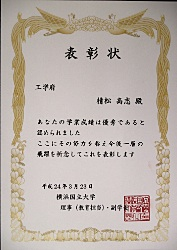
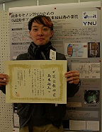
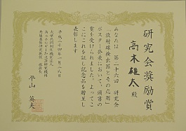
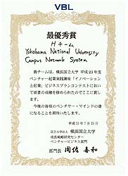

中村研ニュース（2011年度）
M2の高木が日本物理学会年次大会で登壇［2012年3月］
3月24日（土）から27日（火）まで，日本物理学会第67回年次大会が関西学院大学で開催され，25日に中村研の博士課程（前期）２年の高木雄太が登壇しました。 講演のタイトルは「液体キセノンTPC用フロントエンド集積回路開発」で，高エネルギー加速器研究機構他と共同で開発を進めているASICについて発表しました。【祝】学部４年の近末が成績優秀者の表彰［2012年3月］

 学部４年の近末吉人が，3月23日（金）付けで，平成23年度卒業生の成績優秀者として同窓会から表彰を受けました。
学部４年の近末吉人が，3月23日（金）付けで，平成23年度卒業生の成績優秀者として同窓会から表彰を受けました。【祝】博士課程前期２年のあべ松が成績優秀者の表彰［2012年3月］
 博士課程前期２年のあべ松（あべまつ）高志が，3月23日（金）付けで，平成23年度博士課程前期修了生の成績優秀者として副学長から表彰を受けました。
博士課程前期２年のあべ松（あべまつ）高志が，3月23日（金）付けで，平成23年度博士課程前期修了生の成績優秀者として副学長から表彰を受けました。修士生３名と学部生５人が修了・卒業［2012年3月］
 3月23日（金）に修了式・卒業式が行なわれ，中村研も修士生３名と学部生５人が無事に修了・卒業して学位が授与されました。
3月23日（金）に修了式・卒業式が行なわれ，中村研も修士生３名と学部生５人が無事に修了・卒業して学位が授与されました。
修了・卒業したメンバーは次の通りで，４年生のうち２人は引き続き進学して中村研に残ります
- 修士修了
- あべ松 高志，遠藤 雄也，高木 雄太
- 学部卒業
- 岩崎 裕也，近末 吉人，名越 健誠，夏目 浩太，吉田 真央
日本天文学会年次大会で院生が登壇［2012年3月］
3月19日（月）から22日（木）まで，日本天文学会2012年春季年会が龍谷大学深草キャンパスで開催され，20日に中村研の博士課程（前期）２年のあべ松高志が登壇しました。講演のタイトルは，「低エネルギー側の感度向上を目指した裏面照射型CCDの検出効率測定」でした。OBの宮本健司氏が来訪［2012年3月］
3月16日（金）に，中村研OBの宮本健司氏（現・ニコン）が会社説明会のために来訪しました。応用物理学関係連合講演会で院生が登壇［2012年3月］
3月15日（木）から18日（日）まで，第59回応用物理学関係連合講演会が早稲田大学早稲田キャンパス他で開催され，16日に中村研の博士課程前期２年のあべ松高志が登壇し，17日に博士課程前期１年の西村和真がポスター発表しました。 発表のタイトルは，あべ松が「低エネルギー側の感度向上を目指した裏面照射型X線CCDの量子効率測定」，西村が「CMOSイメージセンサを用いたX線直接撮像分光」で，いずれも，東京大学他と行なったＸ線用半導体イメージセンサに関する基礎研究について発表しました。ASTRO-H/SXIグループのミーティングで院生が修論発表［2012年3月］
3月12日（月）に宮崎大学でASTRO-H/SXIグループの修論報告会が開かれ，中村研の博士課程前期２年のあべ松高志と博士課程前期１年の西村和真が参加し，あべ松が修論の研究内容を発表しました。高エネルギー加速器研究機構の放射光施設で微細Ｘ線コリメータの実験［2012年3月］
3月8日（木）〜11日（日）に，つくばの高エネルギー加速器研究機構の放射光施設で微細Ｘ線コリメータに関する実験を行ない，有用なデータを取得しました。小型科学衛星シンポジウムに村山慧と夏目が参加［2012年3月］
3月6日（火），7日（水）に宇宙航空研究開発機構で第2回小型科学衛星シンポジウムが開かれ，村山慧と夏目が参加して，共同研究のポスター発表をしました。発表のタイトルは，「LiteBIRD:観測感度のシミュレーション」でした。学部４年の５人の学部生が卒論発表会で発表［2012年2月］
2月21日（火）に工学部知能物理工学科の卒論発表会が開かれ，中村研の５人の学部４年生が発表を行ないました。発表のタイトルは次の通りです。
◎岩崎 裕也：「卓上型低エネルギーＸ線発生装置の研究」◎近末 吉人：「液体キセノンの発光スペクトル測定のシミュレーション」
◎名越 健誠：「次世代PETに向けたAPDのゲインの測定手法の研究」
◎夏目 浩太：「マルチGPUによる大規模行列計算の高速化 」
◎吉田 真央：「X線CCD駆動用ヘッド基板の製作と性能評価」
M2の３人の院生が修論発表会で発表［2012年2月］
2月15日（水）〜17日（金）に工学府物理情報工学専攻物理工学コースの修論発表会が開かれ，17日（金）に中村研の博士課程前期２年の３人の院生が発表を行ないました。発表のタイトルは次の通りです。
◎あべ松 高志：「低エネルギーX線の検出効率向上を目指した裏面照射型CCDの研究」◎遠藤 雄也：「液体キセノンの発光の時間依存性の研究」
◎高木 雄太：「液体キセノンTPCのための低温動作フロントエンド集積回路の開発」
OBの尾崎雄一氏が来訪［2012年1月］
1月30日（月）に，中村研OBの尾崎雄一氏（現・コニカミノルタオプト）が会社説明会のために来訪しました。OBの鳥越唯氏が来訪［2012年1月］
1月27日（金）に，中村研OBの鳥越唯氏（写真：中央，現・島津製作所）が会社説明会のために来訪しました。【祝】M2の高木が「放射線検出器とその応用」研究会で講演し研究会奨励賞を受賞！［2012年1月］
1月24日（火）〜26日（木）に第26回「放射線検出器とその応用」研究会（高エネルギー加速器研究機構放射線科学センターと応用物理学会・放射線分科会との共催）が高エネルギー加速器研究機構（つくば）で開催され，25日（水）と26日（木）にそれぞれ，博士課程前期２年の高木がShort Oralとポスターの発表を行ないました。タイトルは「液体キセノンTPCのための低温動作フロントエンド集積回路の開発」で，高エネルギー加速器研究機構他と共同で開発を進めているASICについて発表しました。 なお，発表後に高木はただ１人めでたく研究会奨励賞を受賞し，表彰状と記念品が贈呈されました！ 受賞理由は，幅広く応用が可能な技術の開発に成功していることと，Short Oralの受け答えとポスター発表共に優れていたこととのことです。 本研究会は，放射線検出器の基礎的物理化学的過程から検出器開発，放射線計測技術に至るまでの広範なテーマについて各分野の全国の研究者が集まって議論する集まりで，四半世紀以上の長い歴史があります。このような由緒正しい公的な場で，昨年の鳥越に続いて２年連続で当研究室の研究発表が認められたということは大変喜ばしく，非常に力づけられる次第です。本研究は日頃から高い志を持って地道な努力を粘り強く積み重ねてきた成果だと思います。これまでに様々に支援をして下さった共同研究者の皆さんに深く感謝申し上げます。なお，報告した研究はまだやるべき課題が残っていますが，それらを解決していけば，研究成果は今後，低温で用いる放射線検出器において微弱な電気信号を処理する必要のある幅広い研究で用いられると期待されています。次年度の新卒研生として４人が仮配属［2012年1月］
1月23日（月），中村研の平成24年度の新卒研生として4人が仮配属されました。中村の第30回YNUサイエンスカフェの模様が全学のWebページで紹介されました［2012年1月］
12月14日（水）に天王町の横浜ビジネスパークで中村が行なった本学主催の第30回YNUサイエンスカフェの様子が，全学のWebで報告されました。 http://www.ynu.ac.jp/hus/koho/6037/detail.html宇宙科学シンポジウムでＭ2の高木，M1の村山，B4の夏目が発表［2012年1月］
1月5日（木），6日（金）に宇宙航空研究開発機構で第12回宇宙科学シンポジウムが開かれ，両日に博士課程前期２年の高木，博士課程前期１年の村山，学部４年の夏目が共同研究のポスター発表をしました。 発表のタイトルは，高木が「液体キセノンTPCに向けたASICの開発」，村山と夏目が「LiteBIRD: シミュレーションによる感度の研究－GPU利用による可能性－」でした。【謹賀新年】［2012年1月］
新年おめでとうございます今年もよろしくお願いします 昨年も一昨年同様に，公私共に非常に慌ただしく厳しい日々でしたが，今年もまた極めて多忙な年になりそうです。しかし，今年も忙しさに負けることなく，中村研では目先の利益にとらわれずに，専門分野である夢多き宇宙素粒子物理学の本質にあるパイオニア精神を忘れないで，精一杯の努力をして本質的な貢献を続けていきたいと思います。
中村宅で中村研の忘年会［2011年12月］
12月29日（木）に，中村宅で中村研の忘年会を開きました。在籍する学生に加えて，2名のOBや，美味しいネパールカレーを届けて下さった地元のカレー屋さんも加わって，賑やかに時間を過ごしました。中村がYNUサイエンスカフェで講師として演壇に立ちました［2011年12月］
12月14日（水）に天王町の横浜ビジネスパークで，中村が本学主催のYNUサイエンスカフェの講師として演壇に立ちました。タイトルは，「ニュートリノとは何か？光速を超えたか？」ということで，9月23日に世界を駆け巡った，ニュートリノが光速より速かったという発表の内容と背景を駆け足で紹介しました。また，前日の夜に記者発表のあったLHC実験のヒッグス粒子探索に関してもコメントしました。話の後には活発な質疑応答も行われ，盛会になったことを嬉しく思います。この機会に，多くの皆さんに少しでも素粒子物理学の面白さを感じてもらえたなら幸いです。【連絡】中村研に関心をお持ちの３年生へ（2011.12.26）［2011年12月］
12月27日（火）PM2:00頃から，中村研に関心をお持ちの３年生の相談に乗りますので，総合研究棟W604室（中村教員室）においで下さい。【連絡】中村研に関心をお持ちの３年生へ［2011年12月］
12月27日（火）PMに，中村研独自で研究室紹介を行ないたいと思います。また，この時以外も研究室見学を歓迎します。興味がある人は，なるべく事前にメールにてご連絡下さい。 研究室のWeb内の研究テーマの情報は多少古いものもあり，更新には多少時間が掛かりそうです。最新の情報は，研究室に来て頂いてお確かめ下さい。こちらもお手数をお掛けしますが，どうぞよろしくお願いします。 なお，卒研配属を考えている学部３年生へ向けたメッセージを載せています。>> メッセージのページ【連絡】中村研OBOGの皆様へー忘年会情報［2011年12月］
まもなく今年も終わりです。12月29日（木）に中村研の忘年会が計画されています。参加出来そうな方は，中村か，もしくはどなたかご存知の現役の学生がいらっしゃれば，その学生にご連絡を下さい。中村が東京大学宇宙線研究所 共同利用研究成果発表会で講演［2011年12月］
12月16日（金），17日（土）に，東京大学宇宙線研究所の共同利用研究成果発表研究会が東京大学宇宙線研究所（柏キャンパス）で開催され，中村も成果の発表を依頼されて16日（金）の午後に講演を行ないました。講演のタイトルは「液体キセノンのシンチレーションの減衰時間の研究」でした。内容は，M2遠藤，M1藤田，B研究生大山，D2藤井，D2村山等の最近の仕事が中心となっています。大学院生が液体キセノンの発光スペクトルと減衰時間測定実験のデータを取得［2011年12月］
11月20日（金）から12月19日（月）まで，博士課程前期２年の遠藤，同１年の藤田，学部研究生の大山，博士課程後期２年の藤井および村山等が，液体キセノンの真空紫外領域における発光スペクトルと減衰時間の測定実験を高エネルギー加速器研究機構の放射線科学センターで行ないました。現在，データを解析中ですが，去年までの測定に比べて質の良いデータを取得出来たと思います。これまで準備の段階から尽力してくれた学生の皆さん，そして全面的にご協力頂いている高エネルギー加速器研究機構と東京大学宇宙線研究所の先生方に深く感謝申し上げます。新型コリメータの放射光ビームを用いた実験を実施［2011年11月］
本研究室で開発した新型の金属コリメータの性能試験（課題名「ピンホールコリメータによる微細X線ビーム生成」）を，11月4日から8日に，高エネルギー加速器研究機構物質構造科学研究所の放射光科学研究施設で行ない，φ10μmのコリメータの性能を確認しました。M2の高木が先端エレクトロニクスDAQセミナーで発表［2011年11月］
今夏のことですが，7月25日（月）〜29日（金）に高エネルギー加速器研究機構で先端エレクトロニクスDAQセミナーが開かれ，7月29日の「集積回路製作の実際」というセッションにおいて，中村研の博士課程前期２年の高木が「トランジスタの低温測定とTPC-FE」というタイトルで30分の発表を行ないました。中村の巻頭エッセイが掲載されました［2011年11月］
11月10日発行の大修館書店の『G.C.D.英語通信』No.49（年２回発行）に，中村が書いた"アマチュア科学者だった頃"というタイトルの巻頭エッセイが掲載されました。Φ10μmの新型コリメータに成功！［2011年11月］
11月5日（土），つくばの高エネルギー加速器研究機構の放射光科学研究施設（PF）において，Φ10μmのX線用の新型の微細コリメータが出来たことを確認しました。過去のレコードはΦ20μmだったので，その半分を達成したことになります。性能の詳細は，今後の研究でさらに明らかにする予定ですが，今後に様々なピクセル型放射線検出器の研究開発で役立つと見込まれます。M1の藤田等が高エネルギー加速器研究機構で新型コリメータの実験［2011年11月］
11月4日（金）〜8日（火）に博士課程前期１年の藤田他が，つくばの高エネルギー加速器研究機構の放射光科学研究施設（PF）において，当研究室で開発したX線用の新型の微細コリメータの性能を検証する実験を行なっています。今回の実験では，直径10μｍ以下の微細な硬Ｘ線ビームを生成出来るコリメータの試験を行なうと共に，アライメントを容易にする手法の検証を進めています。M2のあべ松がドイツの放射光施設BESSYでＸ線CCDの実験［2011年11月］
11月1日（火）〜7日（月）に博士課程前期２年のあべ松が，ドイツの放射光施設BESSYにおいて大阪大学との共同研究でX線CCDの実験を行なっています。M2の高木が高エネルギー加速器研究機構でASICの回路開発［2011年11月］
夏前から中村研の博士課程前期２年の高木が，高エネルギー加速器研究機構にて共同研究でASICの回路開発を進めています。中村が巻頭エッセイを書きました［2011年10月］
ちょっとした縁がきっかけで，中村がある出版社のPR誌で巻頭エッセイを書きました。いずれ顔写真入りで掲載の予定です。中村がサイエンスカフェのコーディネータを担当［2011年9月］
9月28日（水）に第29回サイエンスカフェ「鉄筋コンクリート造建物の耐震性」が横浜ビジネスガーデンにて開催され，中村もコーディネータとして司会を助けました。 ニュースに載せませんでしたが，夏前にも複数回のサイエンスカフェでコーディネータとして活躍しています。興味をお持ちの方は，横浜国立大学の全学のWebページをご注目下さい。 （ひょっとすると，年内に話題提供者として中村が演壇に立つかもしれません。）日本衣服学会誌に中村が寄稿［2011年9月］
今夏に中村が依頼を受け，日本衣服学会誌で予定されている特集『大震災を受けてー衣服のちから』に「放射能情報の見方と除染のヒント」という記事を寄せました。日本家政学会の夏季セミナーに続く話ですが，この稿を通してさらに多くの方のお役に立てば幸いです。M2のあべ松が日本天文学会秋季年会で発表［2011年9月］
9月19日（月，祝）から22日（木）まで，日本天文学会秋季年会が鹿児島大学で開催され，22日に中村研の博士課程前期２年のあべ松高志がポスター発表しました。 発表のタイトルは「低エネルギー側の検出効率向上を目指した裏面照射型NチャネルCCDの開発」で，本研究室の院生が東京大学および大阪大学と共同で進めている低エネルギー側の分光感度上昇を目指したX線CCDの研究開発について発表しました。D2の村山と藤井および中村が日本物理学会2011秋季大会で登壇［2011年9月］
9月16日（金）から19日（月，祝）まで，日本物理学会2011秋季大会が弘前大学で開催され，16日に中村研の博士課程後期２年の村山育子と藤井景子および中村が登壇しました。 講演のタイトルは，村山が「XMASS実験：スローコントロールデータ常時監視システムの運用」で，本研究室が東京大学宇宙線研究所他と神岡鉱山内で進めている液体キセノンシンチレータを用いた暗黒物質探索実験XMASSにおいて，村山が担当するスローコントロールモニタシステムの開発について発表しました。 また，中村研究室が中心となって進めているキセノン実験に関して，村山が「光子計測（フォトンカウンティング）によるシンチレーション光の時間分解分光法」の題目で発表し，藤井は「液体キセノンの発光スペクトルの測定-5」で発表し，中村が「キセノンの赤外シンチレーションの測定」という題目で発表しました。 その他，XMASS実験の発表とLiteBIRD実験の発表でも研究室のメンバーが著者になっています。大学院工学府博士課程（前期）の一般選抜で３名合格［2011年9月］
平成24年度横浜国立大学大学院工学府博士課程（前期）の一般選抜において，本研究室を志望する受験生が３名合格しました。日本家政学会被服整理学部会夏季セミナーで中村が講演［2011年9月］
8月30日（火）・３1日（水）にホテル横浜ガーデンで日本家政学会被服整理学部会の第41回夏季セミナーが開かれ，中村が依頼を受けて「放射能情報の捉え方と除染のヒント〜原発事故を受けて〜」というタイトルで１時間の講演を行ないました。内容は，原発事故を受けて被服学に携わっている方に知っておいて頂きたい放射線に関する事項についての解説でした。宇宙素粒子実験を通して放射線測定を行なっている者として，他分野にも少しでも貢献出来れば幸いです。M2の遠藤が応用物理学会学術講演会で登壇［2011年9月］
8月29日（月）か9月2日（金）まで，第71回応用物理学会学術講演会が山形大学で開催され，30日に中村研の博士課程（前期）２年の遠藤雄也が登壇しました。 講演のタイトルは「液体キセノンの発光スペクトルの精密測定」で，本研究室が各方面から支援を受けて研究を進めている液体キセノンの発光スペクトルの測定実験について，高精度化に向けた努力と最新結果および今後の予定について報告しました。中村がKEKサマーチャレンジ2011の演習P02を担当しました［2011年8月］
 第５回となる夏のKEKサマーチャレンジが8月19日から27日までKEKで行われ，中村が演習テーマの１つ，「最新のシンチレーション検出器を究めよう〜光る結晶と光る液体キセノン〜」(pdf)をKEKのスタッフの協力の下に担当しました。震災の影響もあってかサマーチャレンジの実施に際しては多くの問題が生じ混乱含みでしたが，中村研の院生やサマーチャレンジ卒業生がTAとして活躍してくれたお陰で，本演習P02の参加者６人の皆さんについては毎日充実した有意義な９日間を過ごせたと思います。なお，他の演習テーマですが横浜国大からの参加者も２名ありました。来年もサマーチャレンジは開催されると思いますので，２年生の皆さんは来年に奮ってご応募下さい！
第５回となる夏のKEKサマーチャレンジが8月19日から27日までKEKで行われ，中村が演習テーマの１つ，「最新のシンチレーション検出器を究めよう〜光る結晶と光る液体キセノン〜」(pdf)をKEKのスタッフの協力の下に担当しました。震災の影響もあってかサマーチャレンジの実施に際しては多くの問題が生じ混乱含みでしたが，中村研の院生やサマーチャレンジ卒業生がTAとして活躍してくれたお陰で，本演習P02の参加者６人の皆さんについては毎日充実した有意義な９日間を過ごせたと思います。なお，他の演習テーマですが横浜国大からの参加者も２名ありました。来年もサマーチャレンジは開催されると思いますので，２年生の皆さんは来年に奮ってご応募下さい！放射線夏の学校に中村が参加［2011年8月］
8月1日（月）〜３日（水）に仙台市の秋保温泉で放射線夏の学校（応用物理学会 放射線分科会 第23回夏の学校，日本原子力学会 放射線工学部会 第18回夏期セミナー，日本原子力学会 保健物理・環境部会 第1回夏期セミナー）が開かれ，中村が初めて参加しました。原発事故に関連する様々な情報の理解と，種々の放射線測定に関する基礎的事項の確認が出来て有意義でした。来年以降は学生を伴って参加したいと考えています。中村研OBの佐藤友厚氏がご結婚［2011年7月］
7月3日（日）に，中村研OBの佐藤友厚氏がご結婚されました。どうもおめでとうございます。お二人でのご来訪を楽しみにしています。大学院工学府博士課程（前期）の特別選抜で１名合格［2011年7月］
平成24年度横浜国立大学大学院工学府博士課程（前期）の特別選抜において，本研究室を志望する受験生が１名合格しました。【祝】M1の村山慧がPED基盤科目「イノベーションと起業」の発表会で受賞！［2011年7月］
7月25日（月）に，PED基盤科目「イノベーションと起業」のビジネスプラン発表会が開かれ，博士課程前期１年の村山慧の属するHチーム（村山と他学科の２人による３人構成）が最優秀賞を受賞しました。 発表したプランは，大学独自のSNSを構築することで大学の情報システムの使い辛さと学科間の希薄な交流を解消するというもので，休講情報，単位情報や履修情報など各ユーザーに必要な情報だけに絞って配信する講義関連のサービスや，教科書の一括購入や新入生の部屋探し支援など，学生生活全般のサービスを提案しました。XMASS実験のセミナーを開催［2011年6月］
6月30日（木）の午後に，高エネルギーと宇宙線のグループのセミナーを開き，東京大学宇宙線研究所神岡宇宙素粒子研究施設の准教授である森山茂栄先生に，岐阜県神岡鉱山で現在コミッショニングフェーズに入っているXMASS実験の現状についてお話し頂きました。大学院の集中講義「高エネルギー理工学」を開講［2011年6月］
6月28日（火）から30日（木）まで，東京大学宇宙線研究所神岡宇宙素粒子研究施設の准教授である森山茂栄先生に，前年度に引き続き，大学院の集中講義「高エネルギー理工学」を開講して頂きました。テーマは，「暗黒物質探索と地下実験」ということで，最近に最もホットなトピックとなっている宇宙の最大の謎のひとつである宇宙の暗黒物質について，基本的なレベルから易しく丁寧にお話し頂きました。心から感謝申し上げます。学部４年の近末と名越が成績優秀者の表彰［2011年6月］
学部４年の近末吉人（写真左）と名越健誠（写真右）の２人が，5月31日（火）付けで，平成22年度前学期の４年生の成績優秀者として表彰を受けました。OBの富田賢典氏ご家族と宮本健司氏が来訪［2011年5月］
5月6日（金）の夜に，中村研OBの富田賢典氏ご夫妻と３ヶ月のお子様（写真：手前），および宮本健司氏（写真：左端，富田氏と宮本氏は共に現・ニコン）が研究室に来訪されました。【お悔やみとお見舞い】東日本大震災について［2011年4月］
3月11日に発生した東日本大震災では，たいへん多くの尊い命が奪われ，甚大な被害が生じてしまいました。現在も各方面に連絡を取り続けておりますが，当研究室の卒業生を含め，中村の知り合いも複数の方が被災しており胸が痛みます。ここに，亡くなられた皆様のご冥福をお祈りし，被災された皆様には心よりお見舞い申し上げます。なお，本震災は，いまだに被害の全体が把握出来ず，原発の事故に至っては災害が現在進行形であることを憂えております。中村研として何をすべきか，また何が出来るか，今後とも長期的な視点で考え，必要な活動を継続していきたいと考えております。どうぞよろしくお願いします。
中村がKEKサマーチャレンジ2011の演習を担当予定［2011年4月］
第５回となる夏のKEKサマーチャレンジが，大震災を乗り越えて，今夏も8月にKEKで行われる方向で計画が進んでいます。中村も液体キセノンに関する演習テーマを受け持ち，KEKのスタッフのご協力の下に担当する予定です。また，中村研の院生やサマチャレ卒業生もTAとして活躍する見込みです。応募要領が公表されましたら，今年も（主に）大学３年生の皆さんは，横浜国大内外から奮ってご応募下さい！３人が大学院に進学し，５人が卒研配属しました［2011年4月］
2011年度がスタートし，３人が大学院に進学し，新４年生５人が研究室に配属されました。- 西村 和真（M1）
- 藤田 崇徳（M1）
- 村山 慧（M1）
- 岩崎 裕也（B4）
- 近末 吉人（B4）
- 名越 健誠（B4）
- 夏目 浩太（B4）
- 吉田 真央（B4）